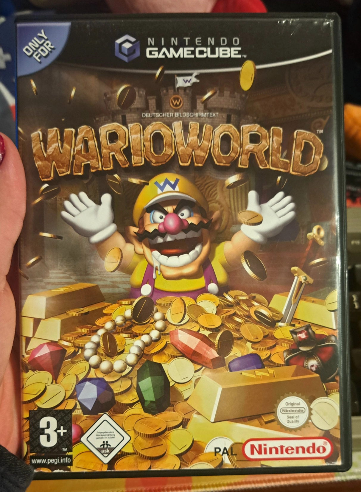
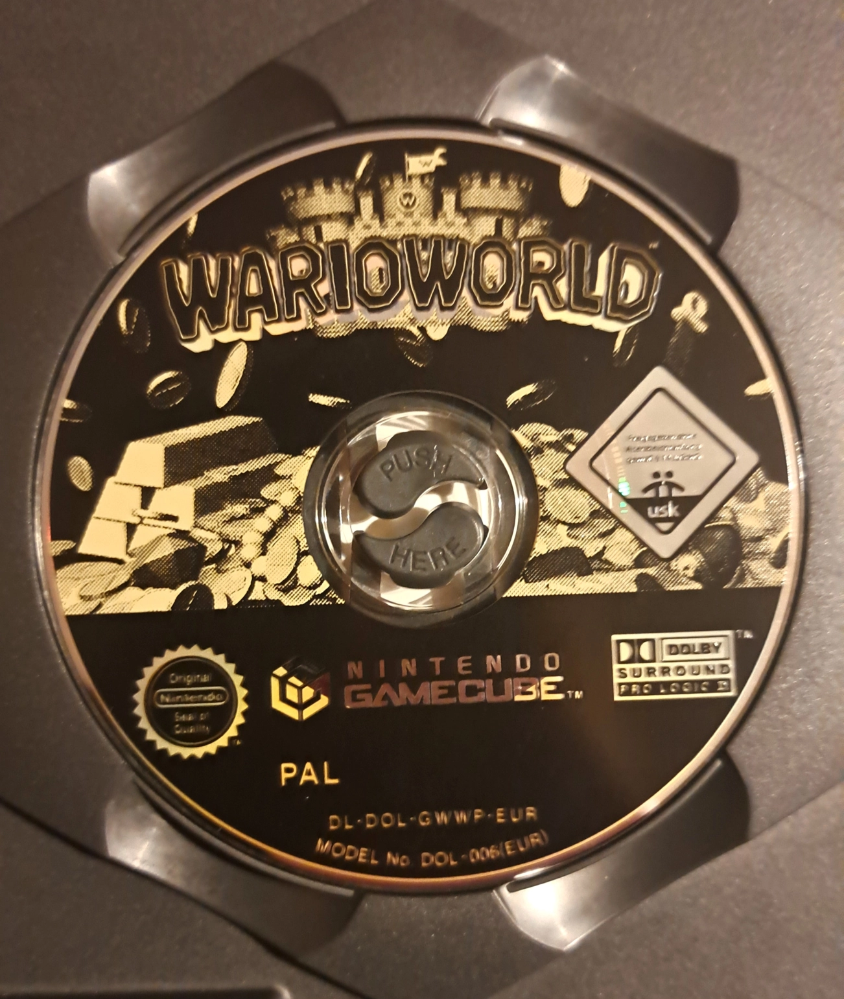

Wario World
Developed by: Treasure
Published by: Nintendo
Platforms:
- Nintendo GameCube
- Nintendo Switch 2 (Switch Online)
Released in:
- 2003
- 2025 (Switch Online)
Completed? Yes !


European and North American Box Art

Game disc
Wario World
Developed by: Treasure
Published by: Nintendo
Platforms:
Released in:
Completed? Yes !
Wario World is a pretty unique game, when it comes to Wario ! It was Wario's first 3D adventure and to date... Wario's only 3D adventure, sadly.
In Wario World you play as our favorite, garlic-scented italian man in yellow clothes trying to reclaim all of his treasures, after an evil, sentiant jewel destroyed his castle and turned all of his coins and treasures into enemies. Wario's job is it now, to go through all four worlds, to find all collectables in every stage, claim back his treasures and to rescue the Spritelings, which will help Wario rebuild his castle.
This game is Wario in his purest form ! The gameplay, which consists of Wario beating the absolute shit out of his enemies and piledriving them into the ground, the soundtrack of the first few levels which encapsulates Wario's personality perfectly and Wario's voice lines, provided by the one and only Charles Martinet, are guaranteed to make your day !
Also Wario mocks you when you pause the game, which is like one of the most annoying but also cutest and most Wario-esqe thing ever ?! He even apologizes to you if you wait on the pause screen for an hour !
The enemy and boss designs in this game are also the craziest shit you will probably ever see ! A giant mutated dinosaur wearing a bikini or a blue, floating baby with a giant head who pumps Wario full of air when he looks at him ! It's not uncommon for one to think to themselves "What the fuck ?!", when encountering some of the enemies in this game !
However, as great as all of this may sound, Wario World definitely has some big problems which can get on your nerves quickly.
Wario World's biggest flaw by far is it's level design, especially in the ladder half of the game. Some of the stages in this game just drag on for WAY to long to the point where it just gets super annoying.
Some of the collectable placements cam also be very irritating, especially some of the Statue Pieces in Shivering Mountains in World 3.
And the final boss is... really nothing worth talking about. (In the western release at least !)
And i haven't even talked about Unithorn's Lair ! Unithorn's Lair SUCKS ! It's mere purpose is to waste the players time ! Basically, every time you fall down a pit, you don't just respawn back on the top and lose some health. Instead you are sent to a place called Unithorn's Lair, where a bunch of creatures named Unithorns gang up on you and steal your coins. All the while you have to find an exit spring in one of the many crates scattered throughout the lair.
If you guess wrong (which will definitely happen), you are greated with a bomb instead ! And the spring placement is always random ! And you will find yourself falling down pit's in this game A LOT so prepare yourself to land here a bunch of times during your playthrough !
All in all i'd say that Wario World is a flawed masterpiece. It absolutely has it's golden moments which will stick with you for a while ! But still this game has a bunch of problems which can ruin the overall experience quite a bit.